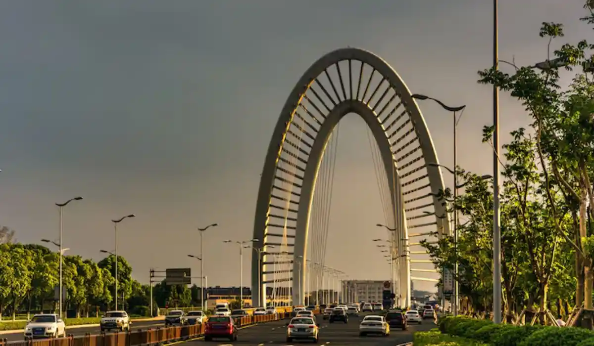

Lawyer and law firm in Dammam, Saudi Arabia, for all case types. Fast legal consultation.

Our team serves every district and area of Dammam without exception, with the same response speed and service standard.
Our team in Dammam serves individual and corporate clients at the heart of the Eastern Province's industrial cluster, with practical experience in labor disputes and commercial contracts tied to the oil and industrial sectors.
Dammam is the capital of the Eastern Province, and together with Khobar, Dhahran, Jubail, Qatif, and Al-Ahsa forms the largest industrial and economic cluster of its kind in the Kingdom, owing to its proximity to oil, gas, and petrochemical facilities. That industrial concentration directly shapes the cases we handle in the city, which lean more heavily toward large commercial contracts and labor matters compared to other Saudi cities.
Labor and employment cases and unfair dismissal and end-of-service claims top the list of requests in Dammam, given the sheer size of the workforce in the industrial and oil sectors and the contractual disputes that come with it. There's also strong demand for commercial debt collection between industrial-sector suppliers and contractors, alongside commercial arbitration as a way to resolve large contract disputes without lengthy litigation.
Given the region's nature, we also handle files tied to the oil and gas sector and the industrial and manufacturing sector, from supply contracts to subcontractor disputes — among the more specialized files our clients need specifically in this region.
Dammam has an active Labor Court given the size of the region's workforce, alongside the Commercial Court and the General Court, all tracked electronically through the Najiz platform at every stage. Where needed, we also coordinate with the relevant industrial-sector regulators when a dispute has a regulatory dimension.
Recurring scenarios include an industrial-facility worker whose contract ended without clear end-of-service compensation, a subcontractor claiming overdue payments from a main contractor on an industrial project, or a supply company needing a contract drafted to protect against delivery-delay risk. We handle each case with a plan tailored to the client's specific sector.
It starts with a short WhatsApp message, followed by a quick assessment from a lawyer specializing in labor or commercial matters depending on your case, then a clear, time-bound plan. Given the size of the region's workforce, we pay particular attention to response speed on labor cases specifically.
In labor cases, the consultation often starts with a review of the employment contract and termination letter to determine whether the dismissal was unfair, before proceeding to any formal step before the relevant labor authority. In large commercial disputes between construction and supply companies, full representation is often necessary from the start given how complex and high-value these contracts tend to be.
Other common scenarios: an expatriate worker needing to understand their legal rights after a fixed-term contract ends, a construction company needing a supply contract with a petrochemical plant reviewed before signing to avoid unfair delay-penalty clauses, or a dispute between an industrial facility owner and a contractor over the quality of a construction project's execution. In all these cases, we start with a document review before determining the best path forward.
Signs that call for immediate contact: receiving a termination letter without a clear reason, end-of-service payments delayed beyond the statutory period, receiving a financial claim from a contractor or supplier, or a vague clause in a major supply contract before signing it. Acting early on these signals protects your rights and reduces the likelihood of a prolonged dispute.
Our Dammam team coordinates directly with the teams in Khobar, Dhahran, Jubail, Qatif, and Al Ahsa, given how economically interconnected these cities are within the Eastern Province. Many of our clients run operations spanning more than one city in this cluster, and we make sure their files are handled consistently regardless of where the business is officially registered.
Our Dammam experience is built on practical understanding of the Eastern Province's industrial work environment, from large employment contracts to supplier disputes — knowledge that lets our team understand the sector's details rather than treating it generically.
Describe your situation over WhatsApp and we'll route you directly to the right practice area, whether that's labor & employment, finance, banking & tax, or another department. You don't need to know the exact legal classification of your situation beforehand.
For labor cases, it helps to have a copy of your employment contract, the termination letter if one exists, and your most recent payslip. For commercial cases between suppliers and contractors, having a copy of the supply or contracting agreement and relevant invoices helps. As with the rest of our network, no documents are needed at the initial consultation stage — we only ask for them once you actually move to filing a formal claim.
Labor cases often follow a defined timeline for filing a complaint with the relevant labor authority, and we explain those timelines precisely once we've assessed your situation. Large commercial cases depend on the contract's complexity and the size of the dispute, and we give you a realistic estimate after an initial file review.
Many industrial companies in Dammam and the Eastern Province deal with suppliers and contractors from other cities, and sometimes with head offices in Riyadh. Our unified network means you don't need a separate office for each party to a dispute or contract; one team handles the entire file even if the dispute spans Dammam and another network city.
We understand that many of our Dammam clients are employees worried about the professional consequences of taking legal action against their employer, or small companies worried about the cost of a dispute with a larger party. We commit to explaining every available option with complete honesty, including the option of not proceeding if it isn't actually in your interest, rather than pushing you toward unnecessary litigation.
Our team in Dammam covers every neighborhood and area without exception, including Al Faisaliyah, Al Shati (the Corniche area), Al Nakheel, Al Manar, and Uhud district, with the same response speed and service standard regardless of where you are in the city.
Yes, we regularly handle unfair dismissal and end-of-service claims for workers at industrial and oil facilities in the Eastern Province, including both fixed-term and permanent contract workers.
Yes, our Dammam team serves the entire Eastern Province, and each city in the region also has its own dedicated page explaining our local services there.
Yes, most commercial files start with a remote consultation before determining whether formal action before the Commercial Court is needed.
Yes, we help companies review and draft supply and contracting agreements with industrial and petrochemical facilities to avoid unfair penalty clauses.
Yes, cost varies by the nature and complexity of the file, and we explain this with full transparency after assessing your case in the free initial consultation.
Yes, WhatsApp is available around the clock, and we prioritize a fast response for urgent cases even outside official business hours.
Reach a licensed lawyer within minutes on WhatsApp — in any city in the Kingdom.
Start your consultation